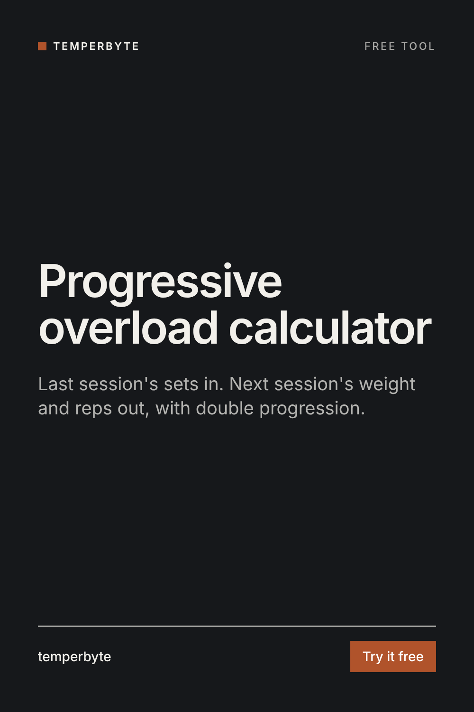

Enter last session's working sets. You get next session's weight and rep targets, using double progression: add reps until every set hits the top of the range, then add weight.
Pick a rep range, for example 8 to 10. Keep the same weight and add reps, one set at a time, until every working set reaches the top of the range. Then add the smallest weight step and start again near the bottom of the range. It is simple, it works for beginners and experienced lifters, and it tells you exactly what to aim for each session.
The calculator also shows an estimated one-rep max (e1RM) from your best set with the Epley formula: weight × (1 + reps ÷ 30), for sets of 10 reps or fewer. Watching the e1RM week to week shows progress even when the weight on the bar has not changed yet.
General training math, not medical advice. Stop and get checked if a lift causes pain. Beginners should learn the movement with a coach before chasing numbers.
Writing the next block for your clients? The Program Progression skill for Claude reviews a whole training block from the log: per-lift progress, stalled and regressing lifts, adherence and fatigue signals, then writes the next 4-week block with starting loads and a message to the client.
See Program Progression